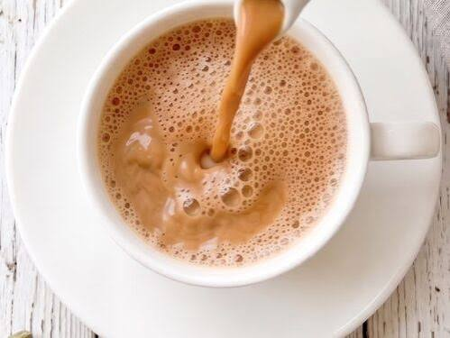

Home
Kenyan Mixed Tea (Chai)

Description
Kenyan Mixed Tea (Chai)—locally known simply as chai or chai ya maziwa—is a rich, creamy, and robust beverage made by boiling black tea leaves directly with milk, water, and sugar.
Unlike Western teas where milk is added to steeped water at the end, Kenyan mixed tea is brewed all together in one pot, creating a deeply infused, comforting drink that serves as a daily staple and a cornerstone of Kenyan hospitality.
Ingredients
- 2 cups (plus a splash extra) water
- 2 teaspoon loose Kenyan black tea leaves
- 1 cup milk
- Sugar to taste
step-by-step instructions
- Pour the water and black tea leaves into a pot and bring to a boil.
- Lower the heat and simmer for about 3 minutes so the tea infuses.
- Pour in the milk.
- Once it comes back to a boil, simmer for about 1 more minute.
- Strain into cups or a flask, add sugar to taste, and serve hot.
Home